This vignette summarizes the ggplot2-style layers
currently exposed by ggWebGL and shows compact CRAN-safe
usage patterns. The examples use in-memory data only and avoid file
output.
Two Workflows
Most users start with a grammar-style plot:
ggplot(mtcars, aes(wt, mpg, colour = factor(cyl))) +
geom_point_webgl() +
geom_line_webgl(aes(group = cyl), alpha = 0.35) +
theme_webgl(shader = "density_splat")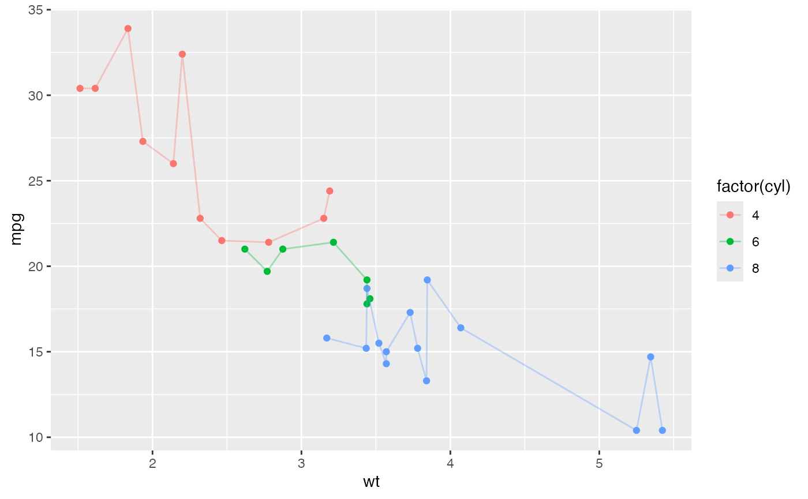
The same renderer can also consume a renderer-ready specification. This is useful when data have already been transformed into primitive payloads:
spec <- ggwebgl_spec(
layers = list(
ggwebgl_layer_points(mtcars, x = "wt", y = "mpg", colour = "#2563eb")
),
labels = list(title = "Renderer-ready point layer"),
webgl = webgl_spec(shader = "density_splat")
)
ggWebGL(spec)Coverage Summary
The table below uses conservative status labels. Stable
means the API is part of the core two-dimensional renderer workflow.
Experimental means the API is exported and tested, but the
rendering contract or interaction details may still evolve.
Metadata-only means metadata can be serialized without
implying full runtime parity with every ggplot2
feature.
| Family | Public APIs | Status | Notes |
|---|---|---|---|
| Points | geom_point_webgl() |
Stable | Core scatter and dense point rendering. |
| Lines and paths |
geom_line_webgl(), geom_path_webgl(),
geom_path3d_webgl()
|
Stable / Experimental | Two-dimensional line/path rendering is core; 3D paths are experimental. |
| Segments and vectors |
geom_segment_webgl(),
geom_vector_webgl()
|
Stable / Experimental | Segments are plain line segments; vectors add arrow-oriented metadata. |
| Rectangles and tiles |
geom_rect_webgl(), geom_tile_webgl()
|
Stable | Uses ggplot2-built rectangle bounds. |
| Count and bin geoms |
geom_bar_webgl(), geom_histogram_webgl(),
geom_bin2d_webgl()
|
Stable | Counts and bins are computed by ggplot2. |
| Curves and contours |
geom_freqpoly_webgl(),
geom_density_webgl(), geom_density2d_webgl(),
geom_contour_webgl()
|
Stable | Rendered as line/path primitives; filled contours are not claimed. |
| Ranges and summaries |
geom_linerange_webgl(),
geom_errorbar_webgl(),
geom_pointrange_webgl(),
geom_crossbar_webgl(),
geom_boxplot_webgl()
|
Stable | Uses built summary columns and point/segment/rectangle primitives. |
| Filled regions |
geom_ribbon_webgl(), geom_area_webgl(),
geom_polygon_webgl(), geom_violin_webgl()
|
Experimental | Filled regions use simple polygon/ribbon-style rendering; complex polygon topology is limited. |
| Raster and grids | geom_raster_webgl() |
Stable | Intended for regular raster-like cell displays. |
| Text annotations |
geom_text_webgl(), geom_label_webgl(),
geom_rug_webgl()
|
Metadata-only / Stable | Text and label layers are overlay metadata, not WebGL glyph rendering; rugs use segment primitives. |
| Meshes and surfaces |
geom_mesh_webgl(),
geom_surface_webgl()
|
Experimental | Browser-side WebGL mesh and structured-grid surface rendering. |
Core 2D Layers
Points, ordered paths, sorted lines, and plain segments cover the most common two-dimensional display cases.
trajectory <- data.frame(
x = cos(seq(0, 2 * pi, length.out = 48)) * seq(0.2, 1, length.out = 48),
y = sin(seq(0, 2 * pi, length.out = 48)) * seq(0.2, 1, length.out = 48),
frame = seq_len(48),
group = "spiral"
)
arrows <- data.frame(
x = c(-0.8, -0.2, 0.4),
y = c(-0.6, 0.1, 0.5),
xend = c(-0.45, 0.15, 0.75),
yend = c(-0.25, 0.35, 0.2)
)
ggplot(trajectory, aes(x, y, group = group)) +
geom_path_webgl(aes(frame = frame), colour = "#2563eb", linewidth = 1.2) +
geom_point_webgl(aes(frame = frame), colour = "#0f766e", size = 1.8) +
geom_segment_webgl(
data = arrows,
aes(x = x, y = y, xend = xend, yend = yend),
inherit.aes = FALSE,
colour = "#334155"
)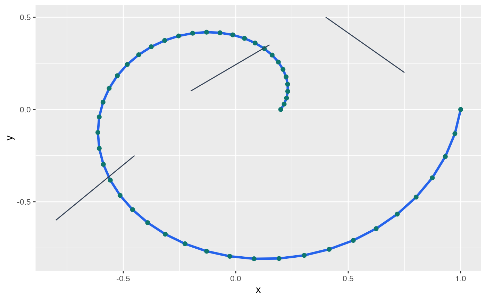
geom_line_webgl() keeps the usual line semantics, while
geom_path_webgl() preserves row order within groups.
ordered <- data.frame(
x = c(3, 1, 2, 4),
y = c(1, 3, 2, 4),
group = "ordered"
)
ggplot(ordered, aes(x, y, group = group)) +
geom_line_webgl(colour = "#64748b") +
geom_path_webgl(colour = "#dc2626", linewidth = 1.2)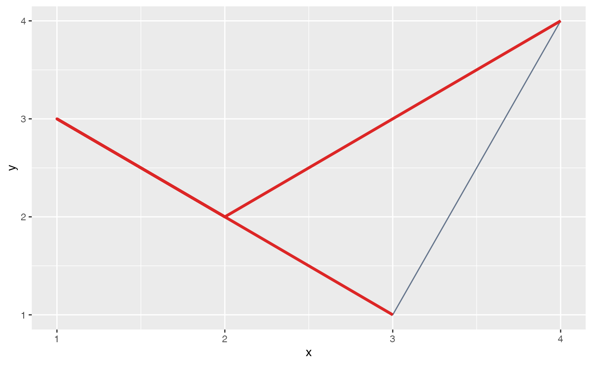
Rectangles, Tiles, and Bins
Rectangle-style geoms use boundaries computed by
ggplot2::ggplot_build(). This keeps position adjustments
and statistical transformations owned by ggplot2.
tile_grid <- expand.grid(
x = seq_len(5),
y = seq_len(4),
KEEP.OUT.ATTRS = FALSE
)
tile_grid$value <- with(tile_grid, sin(x / 2) + cos(y / 2))
ggplot(tile_grid, aes(x, y, fill = value)) +
geom_tile_webgl(alpha = 0.85)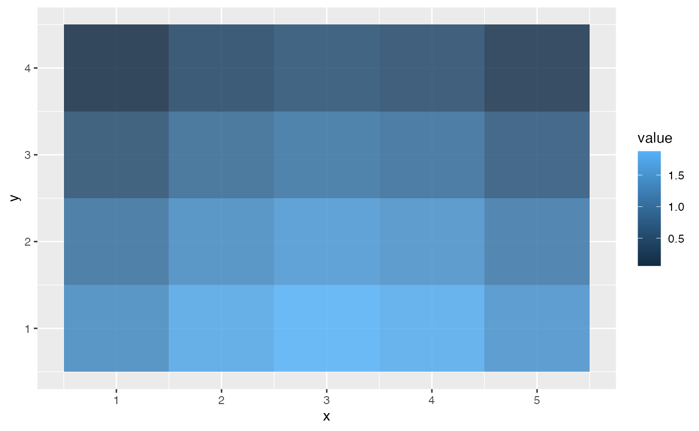
ggplot(mtcars, aes(factor(cyl), fill = factor(am))) +
geom_bar_webgl(position = "stack")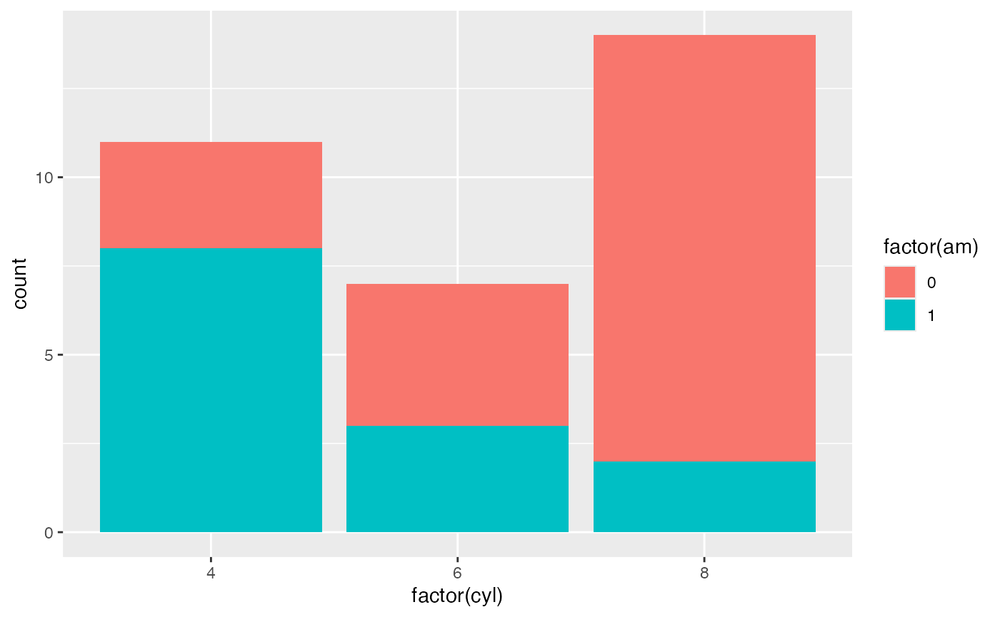
ggplot(mtcars, aes(mpg)) +
geom_histogram_webgl(binwidth = 4)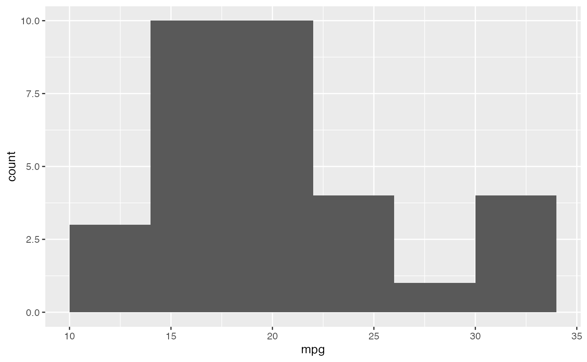
ggplot(mtcars, aes(wt, mpg)) +
geom_bin2d_webgl(bins = 8)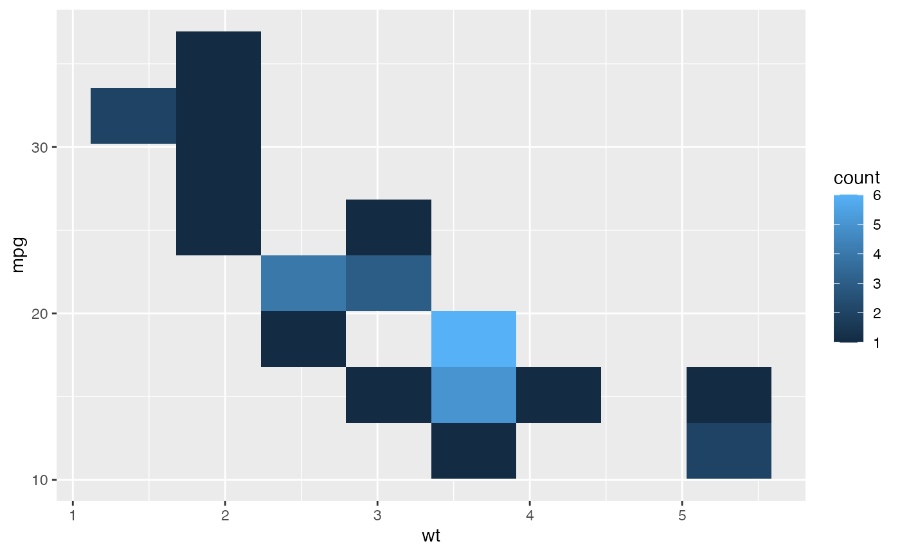
Explicit rectangle bounds are also supported:
rectangles <- data.frame(
xmin = c(0.0, 1.2),
xmax = c(1.0, 2.0),
ymin = c(0.0, 0.4),
ymax = c(0.8, 1.4),
label = c("a", "b")
)
ggplot(rectangles) +
geom_rect_webgl(
aes(xmin = xmin, xmax = xmax, ymin = ymin, ymax = ymax, fill = label),
alpha = 0.75
)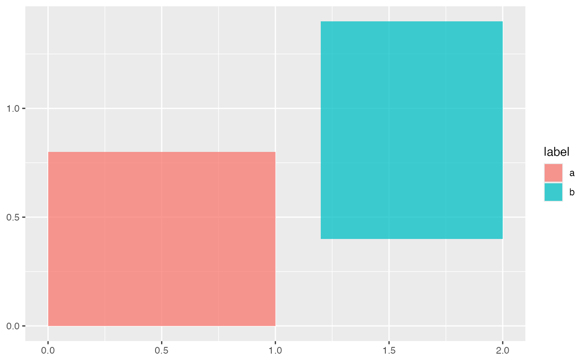
Curves and Contours
Frequency polygons, density curves, two-dimensional density contours,
and regular contour lines all serialize to line/path primitives. The
statistical work remains with ggplot2.
ggplot(mtcars, aes(mpg, colour = factor(cyl))) +
geom_freqpoly_webgl(binwidth = 4, linewidth = 1.1)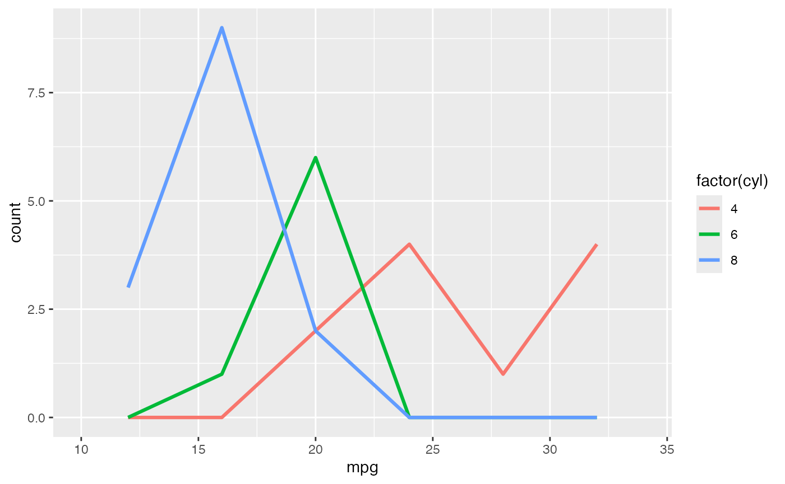
ggplot(mtcars, aes(mpg, colour = factor(cyl))) +
geom_density_webgl(linewidth = 1.1)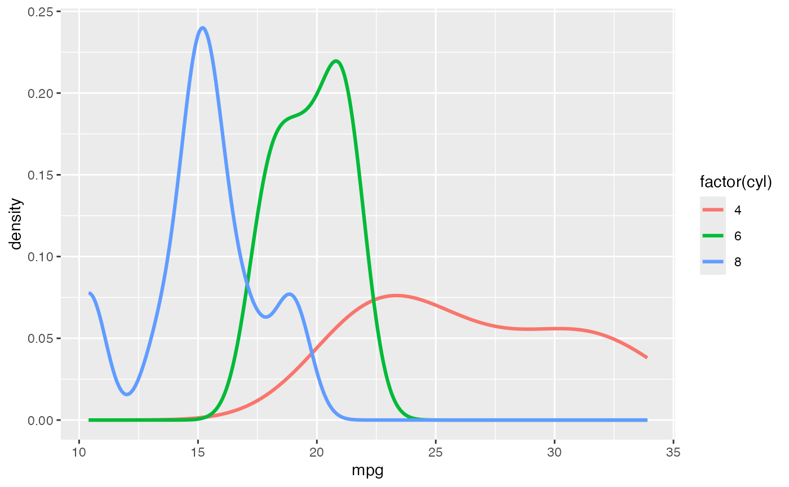
geom_density2d_webgl() uses ggplot2’s
two-dimensional density statistic, which requires MASS at
render time. The chunk is skipped when that optional runtime dependency
is unavailable.
ggplot(mtcars, aes(wt, mpg)) +
geom_density2d_webgl(linewidth = 0.8)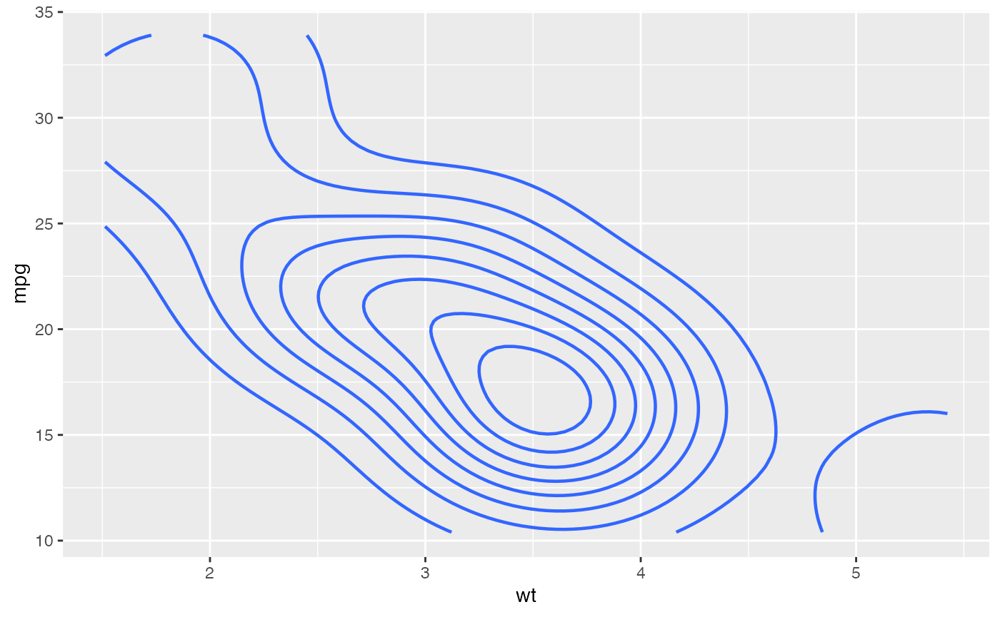
Regular contour lines use gridded z values:
volcano_df <- as.data.frame(as.table(volcano))
names(volcano_df) <- c("x", "y", "z")
volcano_df$x <- as.numeric(volcano_df$x)
volcano_df$y <- as.numeric(volcano_df$y)
ggplot(volcano_df, aes(x, y, z = z)) +
geom_contour_webgl(bins = 8)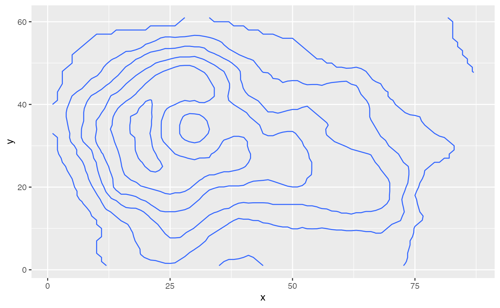
Ranges and Summaries
Range and summary geoms combine segment, point, and rectangle primitives.
summary_df <- data.frame(
group = factor(c("a", "b", "c")),
y = c(4.1, 5.3, 6.0),
ymin = c(3.6, 4.7, 5.4),
ymax = c(4.8, 6.1, 6.8)
)
ggplot(summary_df, aes(group, y, ymin = ymin, ymax = ymax)) +
geom_linerange_webgl(linewidth = 1.2) +
geom_pointrange_webgl(colour = "#2563eb")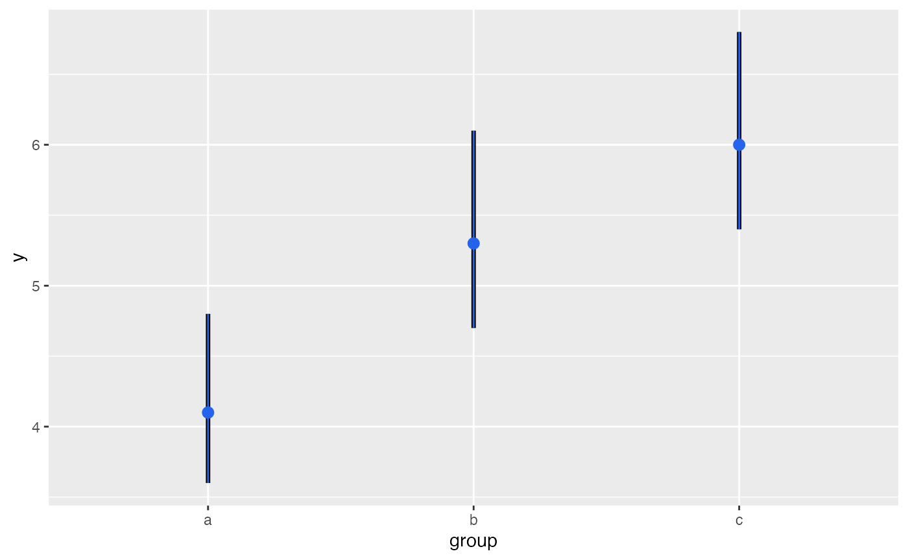
ggplot(summary_df, aes(group, y, ymin = ymin, ymax = ymax)) +
geom_errorbar_webgl(width = 0.25) +
geom_crossbar_webgl(aes(fill = group), width = 0.45, alpha = 0.55)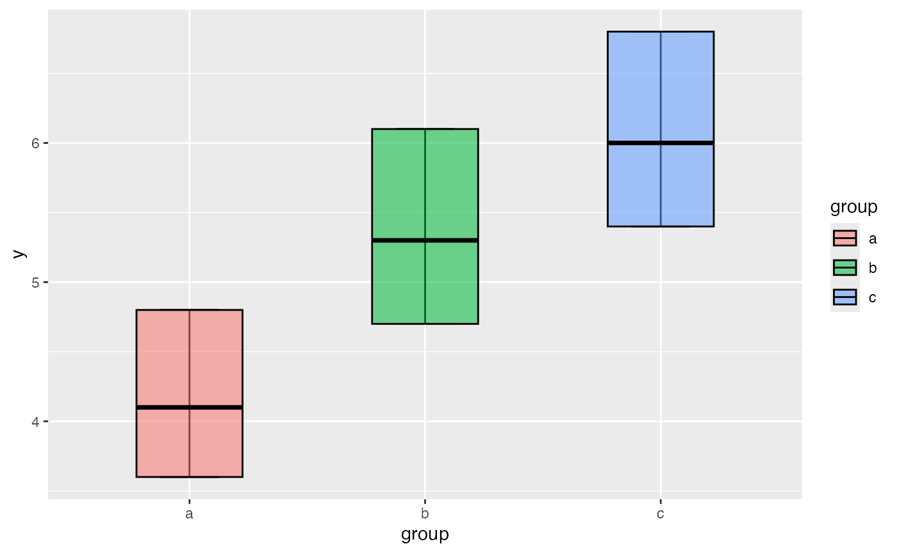
ggplot(mtcars, aes(factor(cyl), mpg, fill = factor(cyl))) +
geom_boxplot_webgl()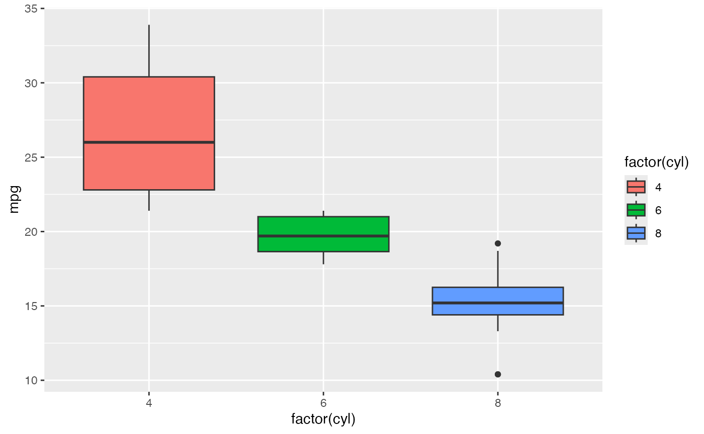
Violin rendering uses ggplot2’s built density
output:
ggplot(mtcars, aes(factor(cyl), mpg, fill = factor(cyl))) +
geom_violin_webgl(alpha = 0.7)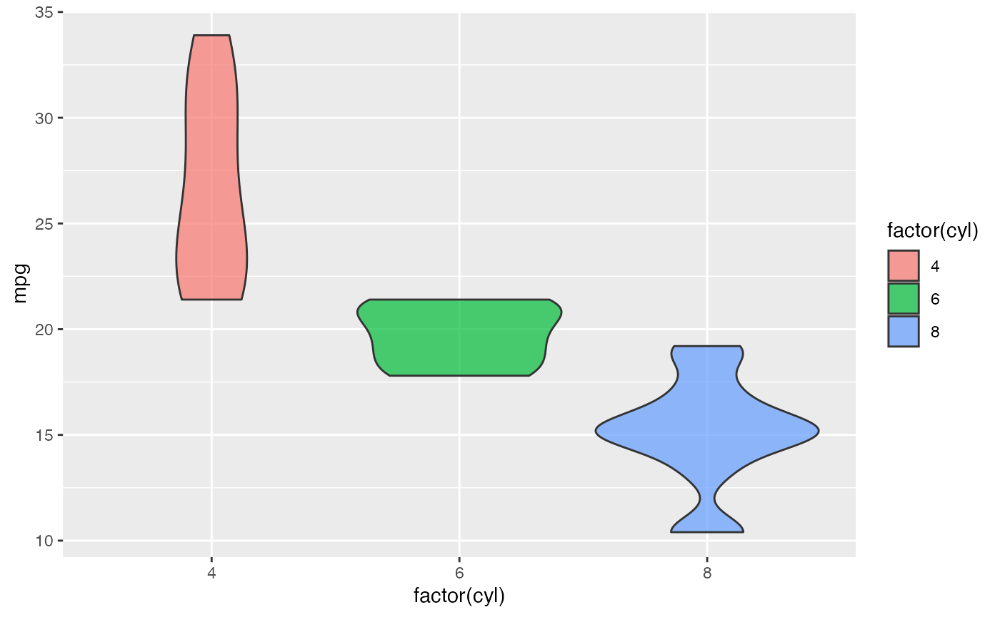
Filled Regions
Ribbon, area, and simple polygon layers are filled-region APIs. They are useful for compact displays, but complex polygon topology such as holes or self-intersections should be treated as outside the current core contract.
band <- data.frame(
x = seq(0, 2 * pi, length.out = 80)
)
band$y <- sin(band$x)
band$ymin <- band$y - 0.15
band$ymax <- band$y + 0.15
ggplot(band, aes(x, ymin = ymin, ymax = ymax)) +
geom_ribbon_webgl(fill = "#93c5fd", alpha = 0.6) +
geom_line_webgl(aes(y = y), colour = "#1d4ed8")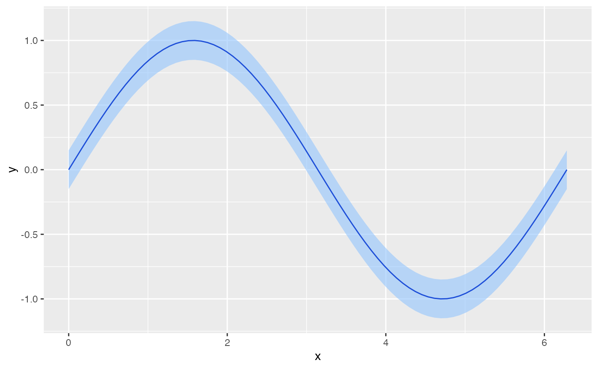
ggplot(band, aes(x, y)) +
geom_area_webgl(fill = "#a7f3d0", alpha = 0.7)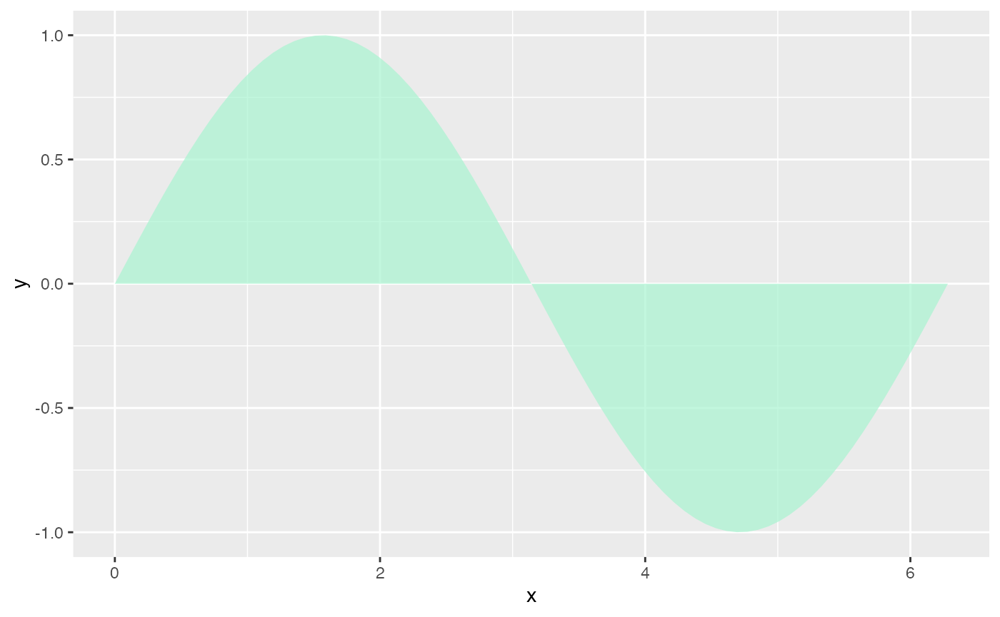
triangle <- data.frame(
x = c(0, 1, 0.2),
y = c(0, 0.2, 1),
group = 1
)
ggplot(triangle, aes(x, y, group = group)) +
geom_polygon_webgl(fill = "#f97316", alpha = 0.7)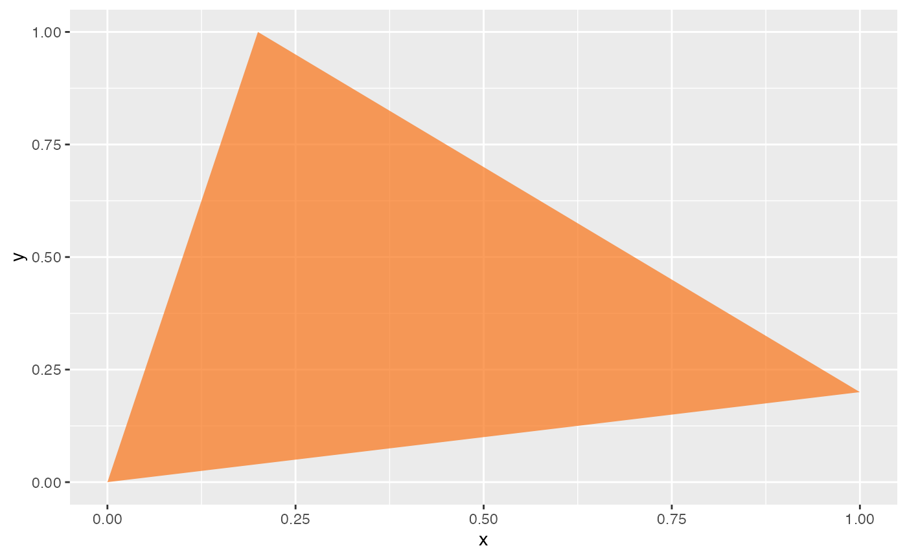
Raster and Annotation Layers
Raster layers are intended for regular cell displays. Text and label layers are overlay metadata, not full WebGL glyph rendering.
small_raster <- expand.grid(
x = seq_len(8),
y = seq_len(6),
KEEP.OUT.ATTRS = FALSE
)
small_raster$value <- with(small_raster, x * y)
ggplot(small_raster, aes(x, y, fill = value)) +
geom_raster_webgl()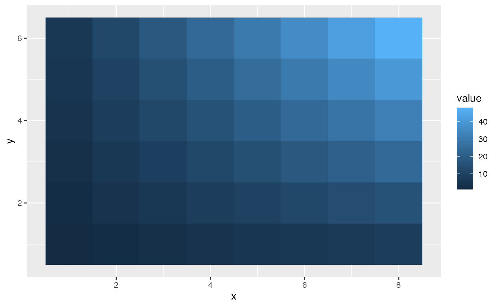
labels <- data.frame(
x = c(2, 6),
y = c(2, 5),
label = c("low", "high")
)
ggplot(small_raster, aes(x, y, fill = value)) +
geom_tile_webgl(alpha = 0.55) +
geom_text_webgl(data = labels, aes(x = x, y = y, label = label), inherit.aes = FALSE) +
geom_rug_webgl(colour = "#334155")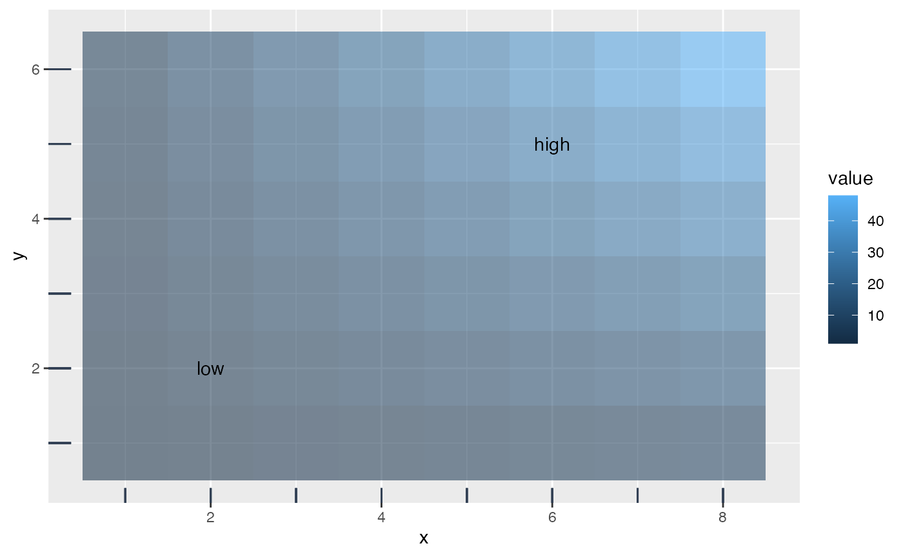
If label backgrounds are needed, geom_label_webgl()
serializes label metadata for the overlay path:
ggplot(labels, aes(x, y, label = label)) +
geom_label_webgl(fill = "#ffffff", colour = "#0f172a")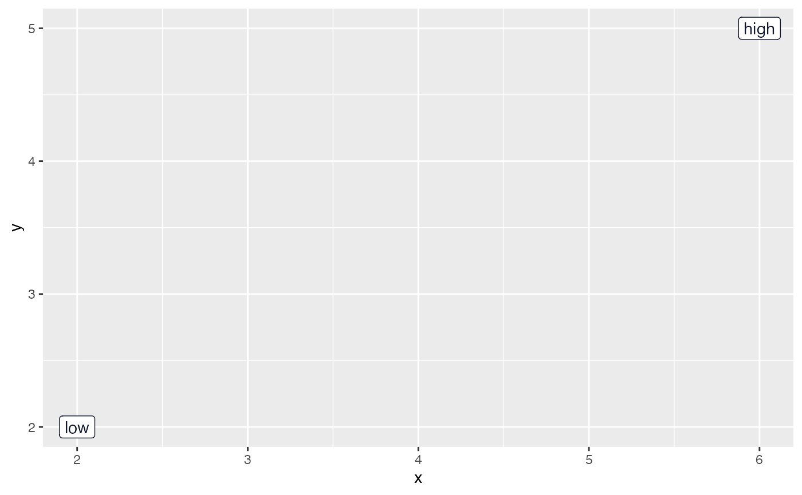
Experimental 3D, Mesh, and Surface Layers
The 3D and indexed-geometry APIs are exported for browser-side WebGL rendering, but they remain experimental because camera, picking, and material behavior may still evolve.
helix_t <- seq(0, 4 * pi, length.out = 80)
helix <- data.frame(
x = cos(helix_t),
y = sin(helix_t),
z = helix_t / max(helix_t),
time = helix_t,
group = "helix"
)
ggplot(helix, aes(x, y, z = z, group = group, time = time)) +
geom_path3d_webgl(colour = "#2563eb") +
coord_webgl_3d()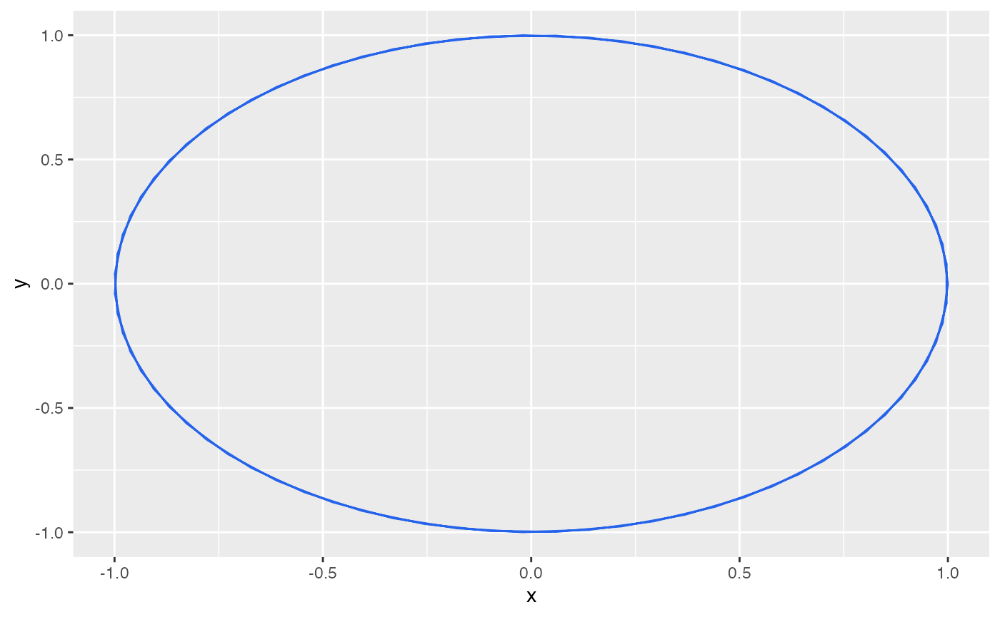
Structured surfaces use a regular grid:
surface_grid <- expand.grid(
x = seq(-1, 1, length.out = 12),
y = seq(-1, 1, length.out = 12),
KEEP.OUT.ATTRS = FALSE
)
surface_grid$z <- with(surface_grid, exp(-(x^2 + y^2)))
ggplot(surface_grid, aes(x, y, z = z, fill = z)) +
geom_surface_webgl(shading = "surface_height_colormap") +
coord_webgl_3d()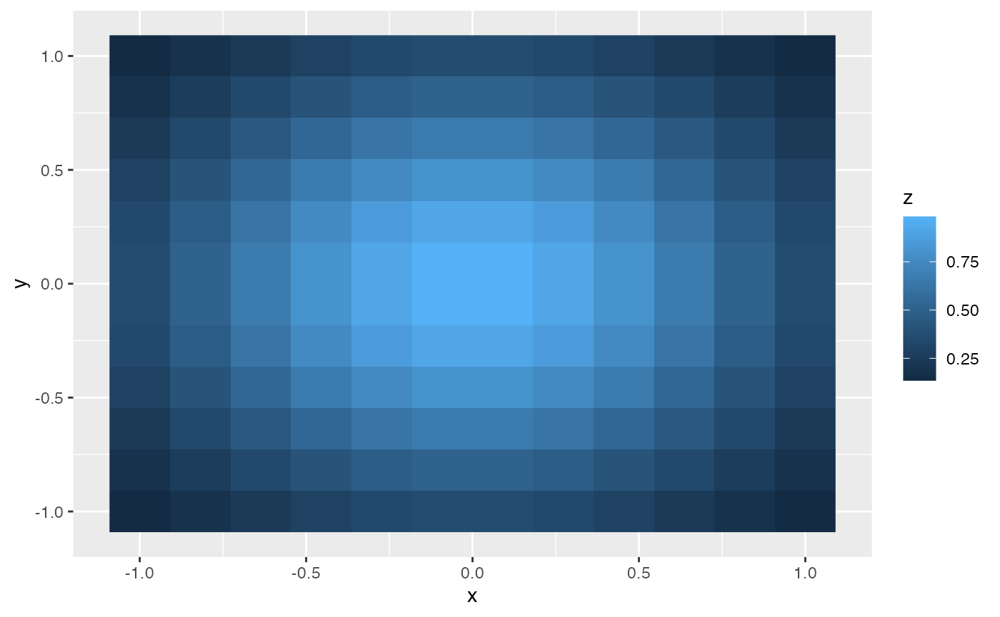
Unstructured meshes can be supplied with explicit vertices and triangle indices:
mesh_vertices <- data.frame(
x = c(0, 1, 0, 0),
y = c(0, 0, 1, 0),
z = c(0, 0, 0, 1),
scalar = c(0, 1, 1, 0.5),
i = c(1, 1, 1, 2),
j = c(2, 2, 3, 3),
k = c(3, 4, 4, 4)
)
ggplot(mesh_vertices, aes(x, y, z = z, i = i, j = j, k = k, scalar = scalar)) +
geom_mesh_webgl(shading = "mesh_scalar_colormap") +
coord_webgl_3d()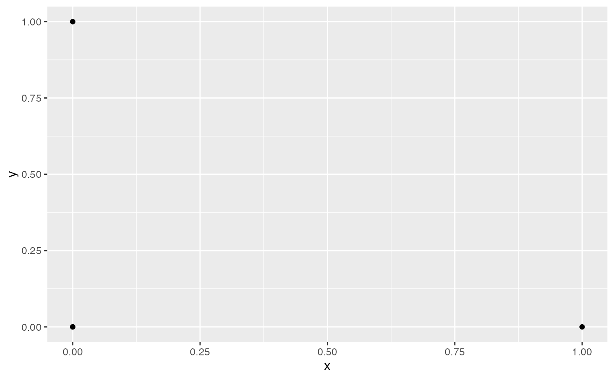
Facets, Coordinates, and Fallbacks
Fixed-scale facets are supported across the primitive families. Free-scale facets are serialized conservatively as metadata unless panel-local scaling is available for the layer combination being rendered.
ggplot(mtcars, aes(wt, mpg, colour = factor(cyl))) +
geom_point_webgl() +
facet_wrap(~am)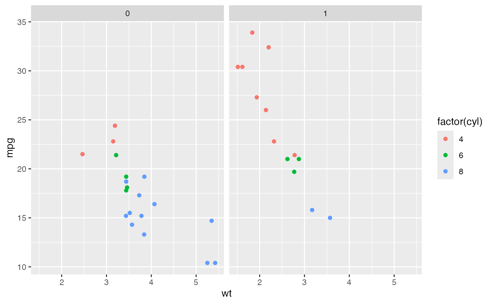
Unsupported geoms remain visible to the extraction layer as
unsupported metadata rather than being silently claimed as WebGL
primitives. When a plot needs exact ggplot2 parity for an
unsupported layer, keep that layer in a static ggplot or replace it with
one of the supported WebGL primitives above.